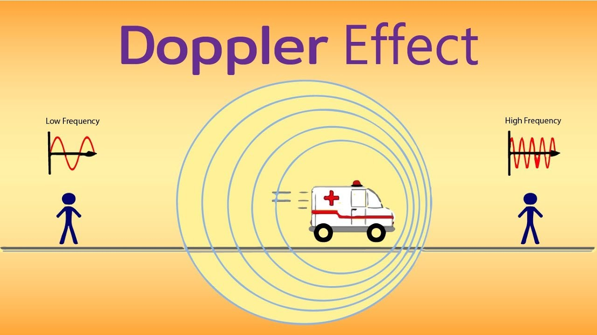
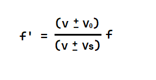

DOPPLER ETKİSİ (Kırmızı - Mavi’ye Kayma) NEDİR?

Kırmızıya kayma, yıldızlar veya galaksiler gibi uzay nesnelerinden saçılan ışığın, adımıza ulaşana kadar daha uzun, dolayısıyla daha kırmızı renklere karşılık gelen dalga boylarına kaymasıdır. Maviye kayma, gittiği mesafe boyunca yolun daralması nedeniyle ışığın kaynaktan daha kısa (yani daha mavi) dalga boylarına hareketidir.
Kırmızıya kayma kavramı, evrenin genişlemesine dair önemli bir ipucudur. Görünür ışık, gökkuşağı gören herkesin görebileceği renk spektrumundan (spektrum) oluşur. Bir cisim bizden uzaklaştıkça ondan saçılan ışığın dalga boyu uzar ve ışık tayfın kırmızı ucuna doğru hareket eder. Bir nesne bize yaklaşırsa, ışığın dalga boyu kısalır ve ışık, spektrumun mavi ucuna kayar.

Bu durumu daha iyi kavrayabilmek için bir ambulansı örnek verebiliriz. Sirenleri çalan bir ambulans bize yaklaştıkça sesin şiddeti (dalga genliği) ve sesin sıklığı (frekansı) artacaktır. Ambulans bizden uzaklaşmaya başladıkça ses şiddeti tekrardan azalacak ve frekans düşmeye, dalga boyu kısalmaya başlayacaktır.
Astronomi ve Astrofizikteki önemi nelerdir ?
Kırmızıya Kayma kavramını astrofizikle ilişkilendiren ilk isim tüm dönemlerin ünlü astrofizikçisi Edwin Hubble’dır. Şüphesiz bilime katkılarından dolayı ismi JWST(James Web Space Telescope)’den bir önceki en gelişmiş uzay teleskobu olan HST(Hubble Space Telescope)’ye verilmiştir.
Hubble 1929’da ortaya koyduğu çalışmalar ışığında istisnasız bütün galaksilerin evrende seçilmiş bir referans noktasına göre uzaklaştığı kanısına varmış ve bu uzaklaşma sonucunda evrenin genişlemesi hakkında oldukça tutarlı argümanlar sunmuştur.
Yalnız burada dikkat edilmesi gereken kritik nokta galaksi kümelerinin birbirinden uzaklaşmasıdır. Galaksilerin birbirinden uzaklaşması kesin bir olgu değildir. Örneğin; Andromeda ve Samanyolu Galaksileri’nin tahmini olarak 4,5 Milyar yıl sonra çarpışması öngörülmektedir, ancak aynı zamanda Andromeda ve Samanyolu’nun bulunduğu galaksi kümesi her dakika diğer galaksi kümelerinden yüzlerce kilometre uzaklaşmaktadır.
Doppler Etkisi’nin formülü nasıldır ?
Burada;
f’ = Gözlenen frekans (Observed frequency)
f = Gerçek frekans (Actual frequency)
v = Ses dalgalarının hızı (Velocity of sound waves)
v0 = Gözlemcinin hızı (Velocity of observer)
vs = Kaynağın hızı (Velocity of the source)
dır.
Kaynakça:http://stdhomes.ieu.edu.tr/ozgeozyenginer/soundwaves/de.html
https://byjus.com/physics/doppler-effect/